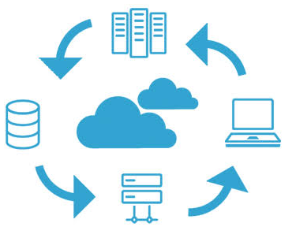
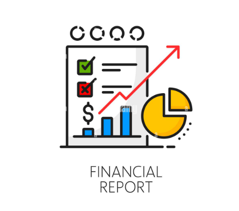
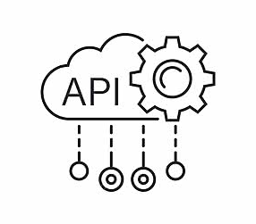
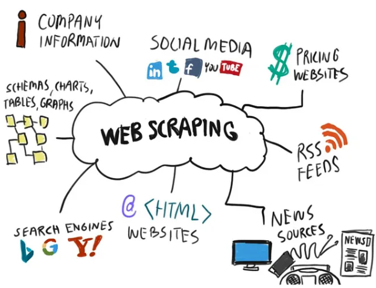
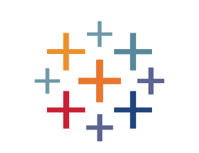

Pipeline end-to-end de ingeniería de datos con AWS S3 y Databricks que implementa una arquitectura Medallion (Bronze, Silver y Gold) para ingerir, limpiar, validar y transformar datos de ventas. Utiliza Auto Loader, PySpark, Delta Lake y Databricks Jobs para automatizar el procesamiento, garantizar la calidad de los datos y generar indicadores analíticos de negocio..

Análisis de aprobación de préstamos utilizando Power BI, Power Query y Power Pivot para identificar patrones de aprobación, evaluar el impacto del Credit Score, ingresos y características del solicitante, y determinar perfiles con menor riesgo crediticio.

ETL/ELT pipeline de extremo a extremo utilizando Python, PySpark, SQL y Databricks para analizar indicadores económicos de Costa Rica.
Implementé una arquitectura Medallion con tablas Delta Lake, pruebas automatizadas de calidad de datos y automaticé el procesamiento mediante un Databricks Job.
Proyecto de análisis de datos enfocado en identificar patrones de ventas, productos más rentables y comportamiento de los clientes. Se realizó la limpieza, transformación y análisis exploratorio en Excel de un dataset para evaluar el desempeño por sucursal, línea de producto, método de pago, género y tendencias temporales..

End-to-end data engineering project using Python, web scraping, and Databricks to extract, clean, and transform book catalog data through a Medallion architecture (Bronze, Silver, and Gold). The pipeline uses Apache Spark, Delta Lake, Unity Catalog, and Databricks Jobs for data processing and automation, integrating a Databricks Genie Agent to answer natural-language questions and generate insights from the processed data.

Proyecto de análisis de datos en Tableau enfocado en identificar los principales factores relacionados con el rendimiento académico de los estudiantes. El análisis permitió comparar el desempeño de los estudiantes y detectar perfiles de mayor y menor rendimiento